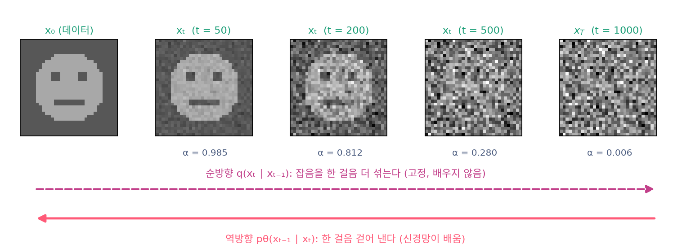

잡음을 맞히는 신경망: DDPM과 잡음 제거 스코어 매칭
DDPM: 인코더를 잡음으로 고정한 여러 층 VAE
지금까지는 「바늘을 배우자」는 길로 왔다. 같은 학습에 전혀 다른 길로 닿을 수도 있다. VAE를 배울 때는 로그우도 log pθ(x), 곧 모델이 그림에 주는 로그 확률을 직접 잴 수 없어서, 그 아래에 받친 잴 수 있는 바닥인 ELBO(증거 하한)를 올렸다. 그런데 VAE의 그림은 흐릿했고, 인코더를 배우는 대신 잡음 섞기로 고정하면 어떨까 하는 생각이 순방향 과정의 출발점이었다. 그렇다면 잡음을 한 번이 아니라 천 번에 나눠 섞는 사슬에도 ELBO를 쓸 수 있을까? 쓴다면 그 손실은 어떤 모양일까?
역사: 비평형 열역학에서 단순한 손실까지
잡음을 작은 걸음으로 여러 번 섞어 데이터의 구조를 천천히 부수고, 그 구조를 되살리는 거꾸로 가는 사슬을 배우자는 생각은 졸-딕스타인(Jascha Sohl-Dickstein)과 동료들의 2015년 논문에서 나왔다. 그 사슬을 무엇으로 학습했는지가 이 절의 이야기다. 그들의 학습 목표는 사슬 전체의 ELBO였다. 한 걸음에 섞는 잡음이 작으면 거꾸로 가는 한 걸음도 앞으로 가는 걸음과 같은 꼴, 곧 가우시안으로 적을 수 있고, 그래서 걸음마다의 항을 식으로 계산할 수 있었다.
호, 자인, 아빌은 2020년에 같은 사슬을 다시 꺼냈다. 그들은 걸음 1000개짜리 분산 보존 일정에서 ELBO를 정리하면 걸음마다의 항이 잡음 맞히기 오차에 가중치를 붙인 꼴이 된다는 것을 보였다. 그리고 그 가중치를 떼어 내고 모든 걸음에 같은 비중을 준 단순한 손실로 학습했다. 논문은 이 모델이 CIFAR-10(가로세로 32픽셀 컬러 그림 6만 장의 데이터셋)에서 조건을 받는 모델까지 포함해 그때까지 나온 대부분의 모델보다 좋은 그림을 냈다고 적었다.
사슬의 ELBO
잡음을 한 걸음 섞는 일을 이렇게 적는다. 걸음 t에서 섞는 잡음의 분산이 βt(베타)이고, 그만큼 원래 쪽을 √(1 − βt)배로 줄여 전체 크기를 지킨다.

VAE에서는 그림 x를 인코더로 잠재 변수 z에 보내고, 디코더로 되돌렸다. 여기서는 데이터 x₀가 그림이고 x₁, …, xT 전체가 잠재 변수다. 인코더 자리에 배우지 않는 잡음 섞기 q가, 디코더 자리에 한 걸음씩 되돌리는 pθ(xt−1 ∣ xt)가 선다. VAE의 ELBO는 모델이 잠재 변수와 그림을 함께 그릴 확률을 인코더 구름 qφ(z ∣ x)의 확률로 나눈 값의 로그를, 구름에서 잠재 변수를 뽑아 평균 낸 것이었다. 그 분수를 나누면 「재구성 항 − 인코더 구름과 사전분포 p(z) 사이의 KL 발산」이 되었다(KL 발산은 두 분포가 얼마나 다른지 재는 0 이상의 양). 사슬에서는 사전분포 자리에 출발 분포 p(xT) = N(0, I)가 선다. 같은 평균을 걸음마다 나눠 정리하면, 걸음마다 KL 항이 하나씩 생긴다.
마지막 KL은 배울 것이 없는 상수이고, 첫째 항은 데이터로 되돌아오는 마지막 한 걸음이다. 가운데 KL들이 학습의 몸통이다. 원래 그림 x₀를 알면 한 걸음 되돌리기의 정답 q(xt−1 ∣ xt, x₀)는 가우시안이고, 그 평균을 x₀ 대신 섞인 잡음 ε로 적을 수 있다. 역방향 한 걸음도 분산을 βt로 고정한 가우시안으로 두고, 평균만 잡음 예측 신경망으로 같은 꼴에 맞춘다.
두 가우시안의 분산은 신경망과 상관없이 정해져 있다. 그러면 KL에서 신경망이 움직일 수 있는 부분은 평균 차이의 제곱을 역방향 분산 βt의 두 배로 나눈 항 하나뿐이다. 두 평균의 차이는 (ε − εθ)에 상수가 곱해진 것이니, 걸음마다의 KL은 잡음 맞히기 오차에 가중치가 붙은 꼴이 된다.
데이터로 되돌아오는 마지막 걸음(t = 1)의 항도 같은 꼴의 가중치를 받는다. VAE의 ELBO가 그대로 잡음 맞히기 손실이 되었다. 여기에 이름을 붙인다. 잡음 섞기를 고정한 사슬을 이렇게 잡음 맞히기로 배우는 모델을 DDPM (잡음 제거 디퓨전 확률 모델 / Denoising Diffusion Probabilistic Model)이라 한다. 호 외의 「단순한 손실」은 이 식에서 λt를 모두 같게 둔 것이다.
코드: 네 걸음짜리 사슬로 확인하기
정말 「ELBO = −(가중 잡음 맞히기 오차) + 상수」인지 작은 사슬로 확인하자. 걸음을 넷으로 줄이고 데이터를 두 점 ±1로 두면, 가장 잘 배운 신경망 E[ε ∣ xt]를 식으로 적을 수 있다. 이 신경망과 그 출력을 0.8배로 줄인 신경망 두 개로, ELBO를 사슬을 뽑아 직접 계산한 값과 가중 오차를 견준다.
import numpy as np
rng = np.random.default_rng(0)
beta = np.array([0.05, 0.15, 0.3, 0.6]) # 네 걸음짜리 장난감 사슬 (T = 4)
alpha = np.sqrt(np.cumprod(1 - beta)); sigma = np.sqrt(1 - alpha**2)
lam = beta / (2 * (1 - beta) * sigma**2) # 걸음마다 붙는 가중치 λ_t
def eps_best(x, t): # 데이터 ±1 일 때 E[ε | x_t] (가장 잘 배운 신경망)
a, s = alpha[t-1], sigma[t-1]
return (x - a * np.tanh(a * x / s**2)) / s
models = {"가장 잘 배운 신경망": eps_best, "그 0.8배": lambda x, t: 0.8 * eps_best(x, t)}
def mean_back(x, t, f): # 역방향 한 걸음의 평균: (x_t − β_t/σ_t · ε_θ) / √(1 − β_t)
return (x - beta[t-1] / sigma[t-1] * f(x, t)) / np.sqrt(1 - beta[t-1])
logN = lambda x, m, v: -0.5 * np.log(2 * np.pi * v) - (x - m)**2 / (2 * v)
N = 2_000_000
x = [rng.choice([-1.0, 1.0], N)] # 순방향 사슬 x0 → x1 → … → x4 를 뽑는다
for t in range(1, 5):
x.append(np.sqrt(1 - beta[t-1]) * x[-1] + np.sqrt(beta[t-1]) * rng.normal(size=N))
for name, f in models.items():
elbo = logN(x[4], 0, 1) # log p(x_T) + Σ log p_θ(x_{t−1}|x_t) − Σ log q(x_t|x_{t−1})
for t in range(4, 0, -1):
elbo += logN(x[t-1], mean_back(x[t], t, f), beta[t-1]) - logN(x[t], np.sqrt(1 - beta[t-1]) * x[t-1], beta[t-1])
loss = 0.0 # 같은 신경망의 가중 잡음 맞히기 오차
for t in range(1, 5):
e = rng.normal(size=N); xt = alpha[t-1] * x[0] + sigma[t-1] * e
loss += lam[t-1] * np.mean((e - f(xt, t))**2)
print(f"{name}: ELBO {elbo.mean():.3f} Σ λ_t·오차 {loss:.3f} 둘의 합 {elbo.mean() + loss:.3f}")
# 가장 잘 배운 신경망: ELBO -0.621 Σ λ_t·오차 0.569 둘의 합 -0.052
# 그 0.8배: ELBO -0.696 Σ λ_t·오차 0.645 둘의 합 -0.051
ELBO는 두 신경망에서 −0.621과 −0.696으로 다르지만, 가중 오차를 더한 합은 −0.052와 −0.051로 같다(남은 차이는 표본의 흔들림). ELBO를 올리는 것과 가중 잡음 맞히기 오차를 줄이는 것은 같은 일이다. 이 사슬이 그림 +1에 주는 참 로그우도를 격자로 적분하면 가장 잘 배운 신경망이 −0.129, 0.8배가 −0.220이라, 둘 다 ELBO보다 크다. 하한이라는 말 그대로다. 걸음이 넷뿐이라 틈이 크고, 걸음을 잘게 나눌수록 틈이 준다.
ML에서: 단순한 손실 한 줄
호 외의 학습 알고리즘은 몇 줄이다. 데이터에서 그림 x₀를 하나 고르고, 걸음 t를 1부터 1000 가운데 고르게 뽑고, 잡음 ε를 뽑아 ‖ε − εθ(αtx₀ + σtε, t)‖²를 줄이는 쪽으로 한 걸음 고친다. 잡음 제거 스코어 매칭에서 본 학습 루프와 같은 모양이다. 바늘을 배우자는 길과 그림의 확률을 올리자는 길이 같은 손실에서 만났고, 다른 것은 걸음마다의 비중뿐이다.
문제 10. 과제 비중을 바꾸면
과제 네 번의 점수가 학생 A는 60, 90, 90, 90점, 학생 B는 80, 75, 75, 75점이다. 강의 계획서는 과제 비중을 50%, 25%, 15%, 10%로 정했다. (가) 계획서대로 가중 평균을 내면 누가 앞서는가? (나) 비중을 모두 같게 하면?

A는 세 번이나 90점이니까 어떻게 계산해도 A가 앞서겠죠.

계획서대로 계산해 봐요.

A는 30 + 22.5 + 13.5 + 9 = 75, B는 40 + 18.75 + 11.25 + 7.5 = 77.5예요. B가 앞서네요. 첫 과제 비중이 절반이라 거기서 20점 진 게 다 뒤집었어요.

(나)는 A가 82.5, B가 76.25라서 A가 앞서. 같은 점수표인데 비중만 바꿨더니 순위가 뒤집혔어.
어느 순위가 맞는 순위일까요?

무엇을 재고 싶으냐에 달렸어요. 첫 과제가 가장 중요한 실력을 본다면 계획서가 맞고, 꾸준함을 보고 싶으면 같은 비중이 맞아요. 숫자 자체가 정해 주지는 않네요.
조별 과제에서 발표 점수 비중을 얼마로 두느냐에 따라 1등 조가 바뀌는 거랑 같네요.
문제 11. 한 걸음의 KL을 잡음 오차로
네 걸음짜리 장난감 사슬(β = 0.05, 0.15, 0.3, 0.6)의 둘째 걸음(t = 2)을 본다. 이 걸음에서 실제로 섞은 잡음은 ε = 0.5이고, 신경망은 εθ = 0.3을 내놓았다. 역방향 한 걸음의 분산은 β2로 둔다. (가) α2², σ2²는? (나) 두 평균 μ̃과 μθ의 차이는? (다) 그 차이로 이 걸음의 KL에서 신경망에 달린 부분을 구하고, λ2(ε − εθ)²와 견주어라.
(가)는 α2² = 0.95 × 0.85 = 0.8075, σ2² = 0.1925예요. (나)는 두 평균의 식에서 xt가 지워지니까 차이는 β2/(σ2√(1 − β2)) × 0.2 = 0.15/(0.4387 × 0.9220) × 0.2 = 0.0742예요.
(다)는 평균 차이의 제곱을 분산의 두 배로 나누면 되죠. 분산은 그 걸음의 잡음 분산 σ2² = 0.1925니까 0.0055/0.385 = 0.0143이요. 그런데 λ2 × 0.04 = 0.4584 × 0.04 = 0.0183이라 안 맞아요.
두 가우시안은 무엇의 분포예요? xt의 분포예요, xt−1의 분포예요?

한 걸음 되돌린 xt−1의 분포요. 그 분산은 역방향 한 걸음의 분산이라 β2 = 0.15예요. σ2²는 x₀에서 x2까지 한꺼번에 섞은 분산이라 다른 거였네요. 0.0055/0.3 = 0.0183이에요. 이제 맞아요.

식으로 보면 차이의 제곱이 βt²/(σt²(1 − βt))·(ε − εθ)²이고, 그걸 2βt로 나누면 βt/(2(1 − βt)σt²)가 남아요. 그게 λt의 정체네요.

그래요. 가중치는 「한 걸음에 섞는 잡음」과 「여기까지 쌓인 잡음」의 비로 정해져요. 두 분산을 헷갈리면 가중치가 통째로 틀어져요.
해석학에서 합성함수를 미분할 때 바깥 함수의 변수와 안쪽 함수의 변수를 섞으면 틀리는 것과 같은 종류의 실수예요.
문제 12. 로그우도가 좋은 모델, 그림이 좋은 모델
DDPM 논문은 CIFAR-10에서 두 모델을 견주었다. ELBO 그대로 학습한 모델은 그림의 질 점수 FID(진짜 그림들과 생성 그림들의 특징 분포가 얼마나 다른지, 낮을수록 좋다)가 13.51, 차원당 음의 로그우도(픽셀 값 하나를 적는 데 드는 비트, 낮을수록 좋다)가 3.70 이하였다. 단순한 손실로 학습한 모델은 FID 3.17, 음의 로그우도 3.75 이하였다. (가) 어느 모델이 더 좋은 모델인가? (나) DDPM 일정에서 ELBO의 가중치 λt는 t = 1에서 0.500, t = 1000에서 0.0102이고, 처음 100 걸음이 가중치 총합의 37.4%를 차지한다. 단순한 손실은 어느 걸음을 ELBO보다 가볍게 치는가? (위젯 2에서 걸음을 옮겨 가며 확인해 보자.)
FID가 4배 넘게 좋으니까 단순한 손실 모델이죠. 음의 로그우도는 3.70과 3.75로 거의 같고요.
로그우도가 더 좋은 건 ELBO 모델이야. 이 책은 그림이 나올 확률을 올리는 걸 목표로 시작했잖아. 그 잣대로는 ELBO 모델이 이겨.
두 사람 다 맞는 말을 했어요. 그럼 두 모델은 무엇에서 갈렸을까요? (나)부터 봐요.

단순한 손실은 1000 걸음에 똑같이 0.1%씩이에요. ELBO는 처음 100 걸음에 37.4%를 몰아줘요. 그러면 단순한 손실은 잡음이 아주 옅은 걸음을 ELBO보다 4분의 1쯤으로 가볍게 쳐요. λt의 처음과 끝은 49배나 차이 나고요.

잡음이 옅은 걸음은 거의 다 된 그림의 아주 가는 잡음을 걷어 내는 일이에요. 픽셀 하나하나의 정확한 값, 곧 로그우도는 거기서 많이 정해지지만, 눈에 보이는 구도나 모양은 잡음이 짙은 걸음에서 정해지겠죠. 단순한 손실은 신경망의 힘을 그쪽으로 돌린 거예요.

논문도 그렇게 설명해요. 옅은 잡음의 항을 덜 쳐서 신경망이 더 어려운, 큰 t의 잡음 제거에 집중하게 했고, 그 재가중이 그림의 질을 높였다고요. (가)의 답은 「무엇을 재느냐에 따라」예요.
과제 비중을 바꾸니 1등이 바뀐 거랑 똑같네요. 점수표는 같고 비중만 다른데, 로그우도로 보면 ELBO 모델이, 그림으로 보면 단순한 손실 모델이 1등이에요.